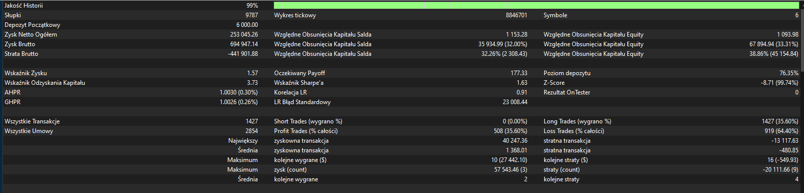

Po kilku miesiącach pracy nad strategią micro-CTA przyszedł czas na sprawdzenie jej w dłuższym horyzoncie. Poniżej prezentuję wyniki pięcioletniego backtestu, który pozwala ocenić, jak system zachowywał się w różnych warunkach rynkowych.
Test został przeprowadzony na danych historycznych obejmujących pięć lat notowań. Strategia wykorzystuje zdywersyfikowany portfel instrumentów obejmujący różne klasy rynków, dzięki czemu wyniki odzwierciedlają zachowanie całego systemu inwestycyjnego, a nie pojedynczego rynku. W tym okresie strategia wygenerowała dodatni wynik przy dużej liczbie zawartych transakcji, potwierdzając założenie, że opiera się na konsekwentnym wykorzystywaniu przewagi statystycznej, a nie na wysokiej skuteczności pojedynczych zagrań.
Na załączonym zestawieniu znajdują się najważniejsze statystyki testu, takie jak wynik końcowy, liczba transakcji, współczynnik zysku oraz przebieg krzywej kapitału. To właśnie one stanowią podstawę do dalszej oceny i rozwijania strategii.
Jak zawsze warto pamiętać, że wyniki backtestów pokazują zachowanie strategii na danych historycznych. Nie stanowią gwarancji osiągnięcia podobnych rezultatów w przyszłości, jednak są ważnym elementem procesu budowy, weryfikacji i doskonalenia systematycznych strategii inwestycyjnych.
